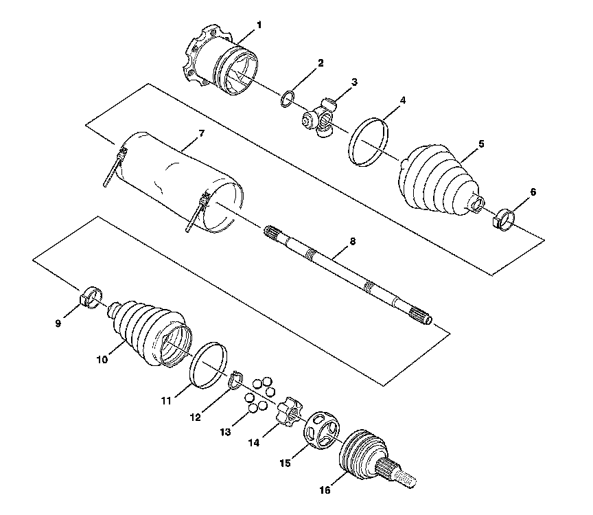

Axle Shaft Assembly
Wheel Drive Shafts Disassembled Views
Halfshaft Components, Disassembled View:

1 - Tripot Housing Assembly
2 - Spacer Ring
3 - Tripot Joint Spider Assembly
4 - Swage Ring
5 - Tripot Joint Boot
6 - Small Boot Retaining Clamp
7 - Halfshaft Boot Cover (Optional)
8 - Halfshaft Bar
9 - Small Boot Retaining Clamp
10 - CV Joint Boot
11 - Swage Ring
12 - Race Retaining Ring
13 - Ball
14 - CV Joint Inner Race
15 - CV Joint Cage
16 - CV Joint Outer Race